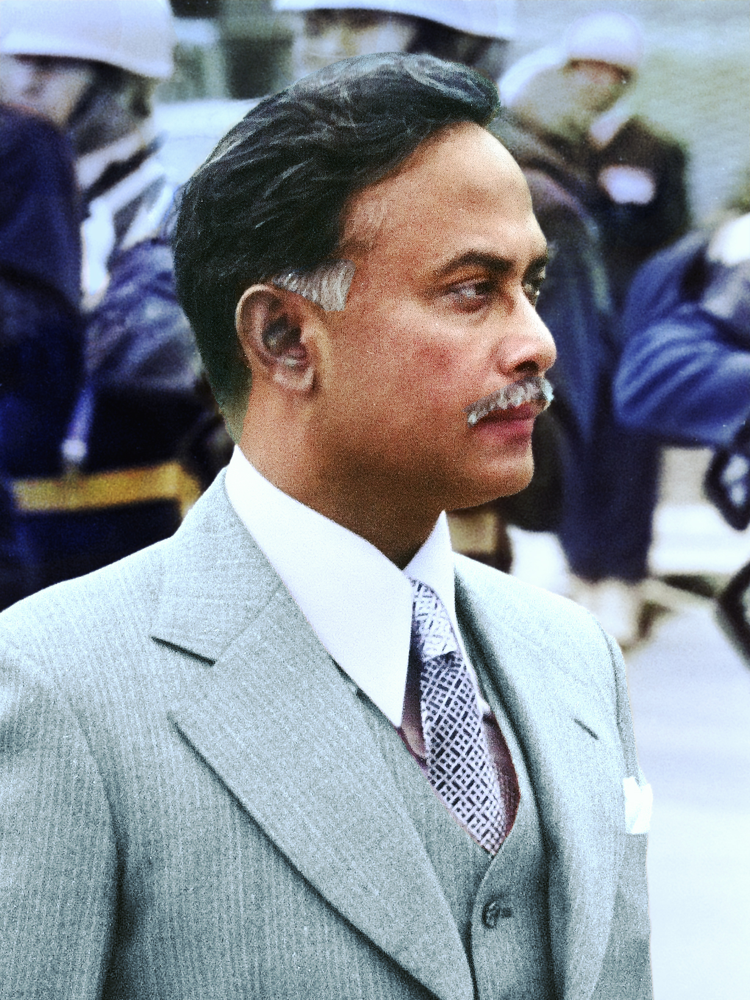
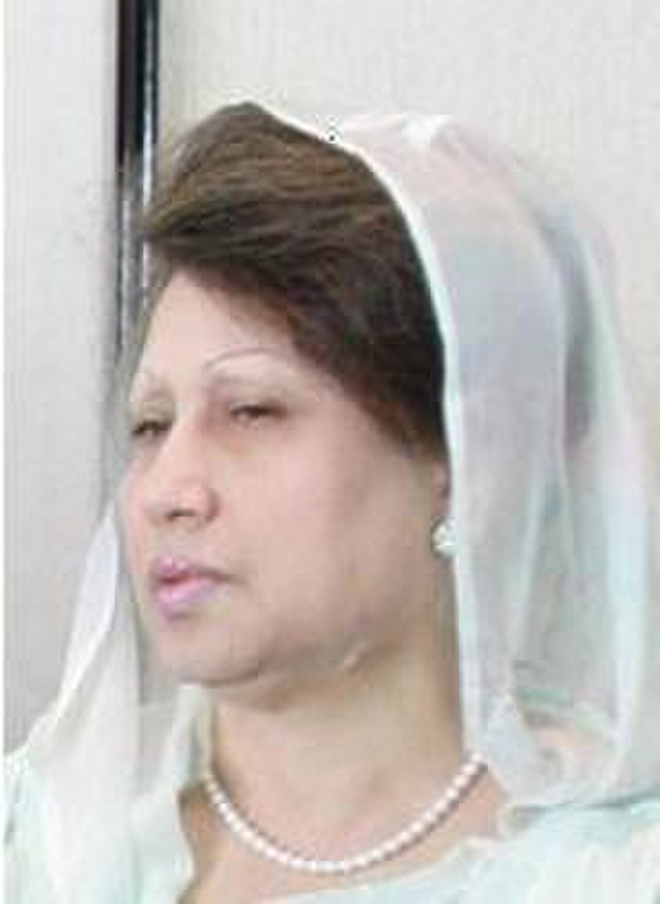
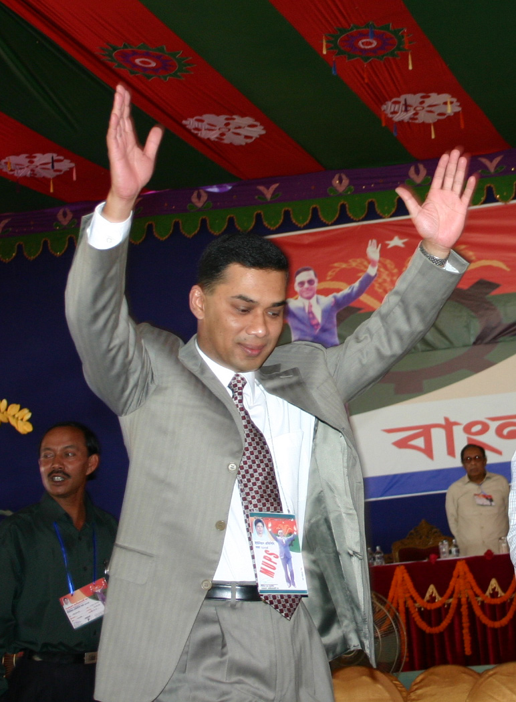

I Major Zia, Provisional Commander-in-Chief of the Bangladesh Liberation Army, hereby proclaims, the independence of Bangladesh
কালুরঘাট বেতার কেন্দ্র, চট্টগ্রাম — ২৭ মার্চ ১৯৭১। শহীদ প্রেসিডেন্ট জিয়াউর রহমান স্বাধীনতার ঘোষণা পাঠ করছেন।
টাইমলাইন
জন্ম (১৯৩৬) থেকে আজ পর্যন্ত — শহীদ প্রেসিডেন্ট জিয়াউর রহমানের জীবন, মুক্তিযুদ্ধ, রাষ্ট্রপতিত্ব ও জিয়া পরিবারের যাত্রার গুরুত্বপূর্ণ মুহূর্তগুলো।
জিয়া পরিবার

শহীদ প্রেসিডেন্ট জিয়াউর রহমান
বীরউত্তম জিয়াউর রহমান (১৯৩৬–১৯৮১) ছিলেন স্বাধীনতার ঘোষক, মুক্তিযুদ্ধের সেক্টর ও Z ফোর্স কমান্ডার, সেনাপ্রধান এবং বাংলাদেশের রাষ্ট্রপতি (১৯৭৭–৮১)। তিনি বাংলাদেশ জাতীয়তাবাদী দল (BNP)-এর প্রতিষ্ঠাতা।
আরও জানুন
বেগম খালেদা জিয়া
বেগম খালেদা জিয়া (১৯৪৬–২০২৫) ছিলেন বাংলাদেশের প্রথম নারী প্রধানমন্ত্রী ও BNP-র দীর্ঘতম চেয়ারপারসন; ১৯৯১–৯৬ ও ২০০১–০৬ মেয়াদে সরকারপ্রধান।
আরও জানুন
তারেক রহমান
শহীদ প্রেসিডেন্ট জিয়া ও বেগম খালেদা জিয়ার জ্যেষ্ঠ সন্তান; BNP-র চেয়ারম্যান এবং ২০২৬ সাল থেকে বাংলাদেশের প্রধানমন্ত্রী।
আরও জানুন
পরিবার ও উত্তরাধিকার
জিয়া পরিবার — তারেক রহমান, আরাফাত রহমান কোকো, জুবাইদা ও জাইমা রহমান — এবং চন্দ্রিমা উদ্যানের স্মৃতিকেন্দ্র।
আরও জানুনছবি ও ভিডিও
স্মৃতিগ্রন্থাগারের সংগ্রহ থেকে নির্বাচিত গ্যালারি — একটু সময় নিয়ে দেখে নিন।